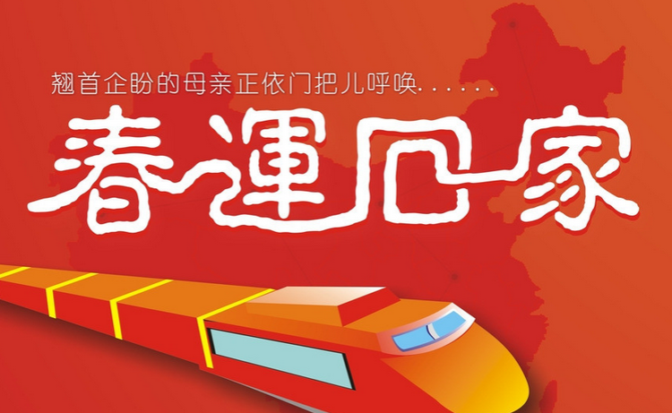
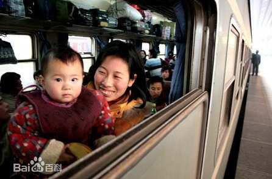

春运
春运，即春节运输，是中国在农历春节前后发生的一种大规模的高交通运输压力的现象。以春节为中心，共40天左右，每年农历腊月十五到次年正月廿五。由国家发改委统一发布，交通运输部、民航局按此进行专门运输安排的全国性交通运输高峰叫做春运。一般意义上的春运， 是指中国大陆的城际交通，不包括中国大陆与香港、澳门和台湾之间的交通以及国际交通。“春运”一词最早出现于1980年的《人民日报》。改革开放以来，随着对人员流动限制的放宽，越来越多的人选择离乡外出务工、求学。诸多人群集中在春节期间返乡，形成了堪称“全球罕见的人口流动”的春运。近30多年来，春运大军从1亿人次增长到2015年的37亿人次，相当于让非洲、欧洲、美洲、大洋洲的总人口搬一次家。

春运概念
口语中的“春运”有两个含义，一是指春节前后的运输现象，二是“春运期间”的简称。春运规模之大，以致中国大陆交通难以承受，为了解决春运问题，中国政府每年都要提前部署，但仍无法满足春运要求。春运的节前运输安排通常由每年农历腊月十六开始，那时候民工开始放假，纷纷乘交通工具回乡。每年春运，铁路运输是重中之重，中国铁路总公司采用“基本方案”、“预备方案”、“应急方案”三套运力方案，分别应对正常客流、高峰客流和突发客流。如今中国铁路总公司为缓解购票压力，实行实名制购票，以窗口、网络、电话等多种渠道分散购票人群，“一票难求”的情况有所缓解。“春运”被誉为人类历史上规模最大的、周期性的人类大迁徙。在40天左右的时间里，有30多亿人次的人口流动，占世界人口（约70亿人）的3/7，相当于全国人民进行两次大迁移。中国春运入选世界纪录协会世界上最大的周期性运输高峰，创造了多项世界之最。

春运特点
交通压力主要集中在陆路运输，航空也有一些压力，但由于受到价格等因素制约，压力增长有限，河运与海运因可及范围及安全等方面，压力增长极为有限。 春运交通压力有明显的时间性和方向性。一般在春节前压力主要集中在从经济较发达地区到经济欠发达地区，从周边城市到旅游景点的路线上。除夕、正月初一、初二这几天的春运压力较小。春节后运输压力转移到在从经济欠发达地区到经济发达地区，从旅游景点到周边城市的路线上。
春运防骗
春运防骗要点一：旅客乘车要有一个清醒的头脑，遇到陌生人搭腔要有防备心，不要轻易泄露个人信息，不为骗子的花言巧语所迷惑。
春运防骗要点二：遇到陌生人的邀请一定要学会拒绝，不要贸然单独赴约，更不要贪财。
春运防骗要点三：出行最好有亲友相伴。
春运防骗要点四：不要轻意向别人透露出差、旅行的目的和携带物品或现金数目。
春运防骗要点五：不要轻易接受别人的帮助，不要随意食用别人的饮料、饭菜。
春运防骗要点六：获得较大面额的人民币时，要认真识别真伪，要仔细观察票面大小、颜色、纸质、票面暗记等。发现假钞应及时向公安机关报告。要警惕假银元、假钞票、假汇票诈骗活动，要防止骗子冒充执法者施行诈骗。